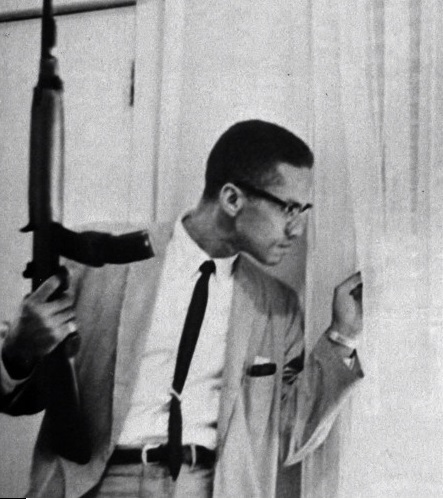
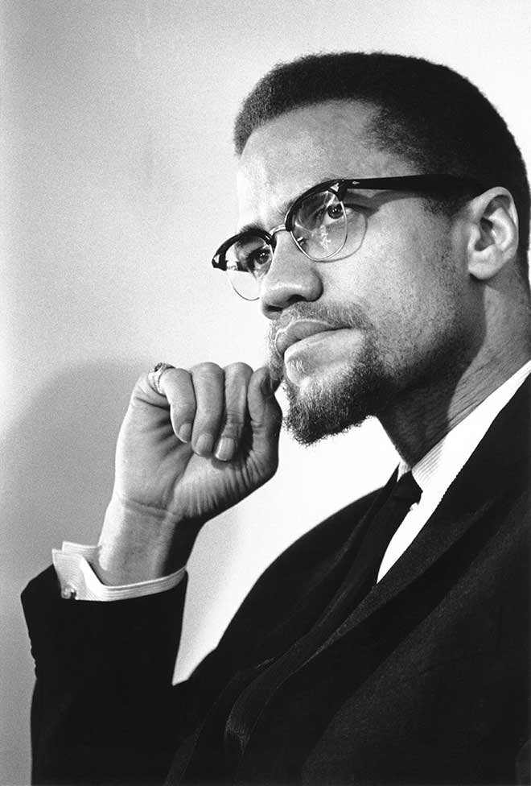
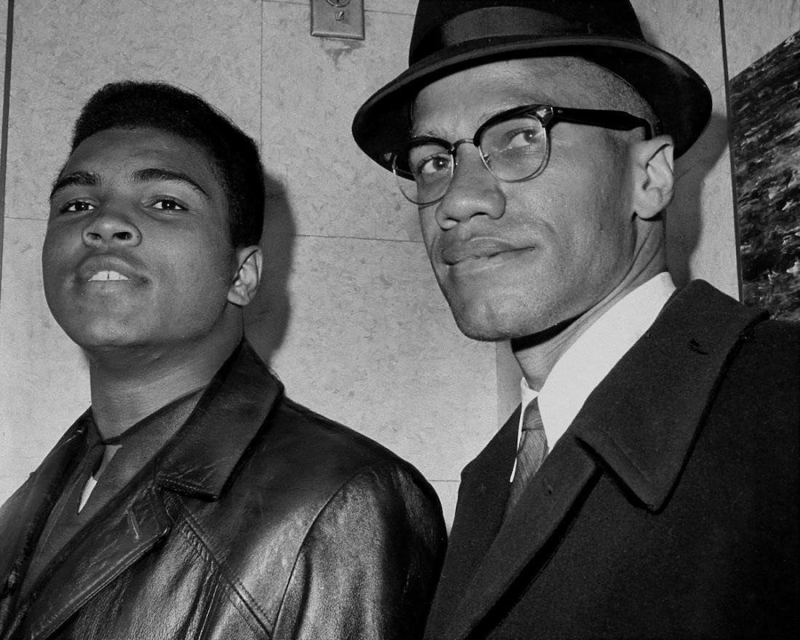

Çocukluğu ve Gençliği
Malcolm Little, 19 Mayıs 1925'te Grenada doğumlu Earl Little ile
Georgia doğumlu Louise Norton Little'ın yedi çocuğundan dördüncüsü
olarak Omaha'da dünyaya geldi. Babası Earl Little, Pan-Afrikanizm
taraftarıydı ve bulundukları çevrede "Universal Negro Improvement
Association" hareketinin lideri konumundaki Marcus Garvey'e de hayran
bir Baptist idi. Malcolm, daha sonra babasının üç kardeşinin
beyazlar tarafından öldürüldüğünü söyledi. Ku Klux Klan'ın
tehditlerinden —Earl'ün katıldığı UNIA faaliyetleri, örgüt için
"sorun" teşkil etmekteydi. Earl ve ailesi 1926 yılında önce Milwaukee
hemen sonra da Lansing'e taşındı. Aile, burada da zenci düşmanı
ırkçı örgüt "Siyah Lejyon" tarafından sık sık saldırılara maruz kaldı.
Nihâyet 1929 yılında evleri yakıldı. (Earl'e göre sorumlu Siyah
Lejyon'du) Malcolm 6 yaşındayken babası, resmi kayıtlara göre tramvay
kazası sonucu öldü. Louise ise Earl'ün Siyah Lejyon tarafından
öldürüldüğüne inanıyordu. Babasının ölümünden zenci düşmanı ırkçıların
sorumlu olduğu söylentileri ve bu söylentilerin kulaktan kulağa
dolaşması, daha çocuk yaştaki Malcolm üzerinde etkiler bıraktı.
Yaşadığı ekonomik problemler sonrası, aylık 18 dolar ödeme yaptığı
yaşam sigortası tarafından Louise Little' (o zamanın parasıyla 1,000
dolar) maaş bağlandı. Fakat daha sonra ödeme yapan şirket,
Louise'in intihara teşebbüs ettiğini iddia ederek politikaları
gereğince maaş ödemeyi reddetti. Kıt kanaat geçinen Louise ise
bahçesinin bir kısmını kiraya verdi ve oğullarını avcılığa
yönlendirdi. 1937 yılında, Louise bir adam ile flört etmeye
başladı. Adam Louise'i hamileyken bırakıp kaçtı. 1938 yılının
sonlarına doğru, sinir bozukluğu hastalığı tedavisi görmek üzere
hastahaneye yatırıldı. Çocuklar, birbirlerinden ayrılarak koruyucu
ailelere verildi. Malcolm ve kardeşleri annelerini tam 24 yıl sonra
hastaneden taburcu edebildiler. Malcolm Little, orta okulda
diğer öğrencilerden daha başarılıydı. O sıralarda en büyük arzusu
avukat olmaktı fakat beyaz bir öğretmeninin "avukatlık bir zenci için
hiç de gerçekçi bir hedef değil" demesi üzerine okulu bıraktı.
Malcolm, daha sonra duygusunu, beyaz dünyada yeteneği ne olursa olsun
kariyer hedefleyen bir siyahi için yer yok diyerek ifade etti. 14
yaşından 21 yaşına kadar üvey kız kardeşi Ella Little-Collins ile
birlikte Roxbury (çoğunluğu siyahi insanlardan oluşan Boston'daki bir
semt) semtinde yaşayan Malcolm, bu dönemde birçok farklı işte
çalıştı. Flint'te bulunduğu kısa bir süreden sonra 1943
yılında Harlem'e gitti. Burada, uyuşturucu, kumar, haraç, hırsızlık ve
fuhuş da dahil olmak üzere birçok suça bulaştı. Ayrıca son
zamanlarda çıkan biyografilerine göre diğer erkeklerle genellikle para
için ilişkiye de girmiştir. Daha sonra da, kızıl saçlarından
dolayı "Kızıl Detroit" (İngilizce: Detroit Red) diye seslendiği
dedesinden (anne tarafından) bir miras kalmıştır. Askerlik
yaşı geldiğinde ise, zorunlu askerlik kurulu yetkililerine "zenci
askerleri organize etmek... silah çalmak ve biraz kraker öldürmek"
için güneye gönderilmek istediğini söyledikten sonra "askerlik için
zihinsel yetersizlik" hükmü aldı ve askere gitmedi. 1945
yılının sonlarına doğru Malcolm, Boston'a geri döndü ve burada dört
suç ortağıyla birlikte zengin beyaz aileleri hedefledikleri çok sayıda
soygun suçlarına karıştı. 1946 yılında tamirci dükkanından saat
çalarken tutuklandı. Şubat ayında ise, yankesicilik ve haneye
tecavüz suçlarından 8 ile 10 yıl arasında ceza yedi.
Cezaevi dönemi
Malcolm Little tutukluluk süresince kendi kendisini yetiştirmiş bir
kişi olan mahkûm arkadaşı John Bembry ile görüştü. John yapmış olduğu
etki ile, Malcolm'un okumaya karşı isteğini artırmıştır. Bu sırada,
kardeşlerinden bazıları İslam Ümmeti (nispeten dini ve siyahi hareket,
en sonunda Afrikan diyasporasının beyaz Amerikalı baskısından
kurtulmak için Afrika'ya dönmesi gerektiğini tavsiye etmiştir) ile
ilgili haberler göndermişti. İlk başta çok ilgilenmedi. Sonra kardeşi
Reginald'dan, "Malcolm, sigara içmeyi ve domuz eti yemeyi bırak.
Hapishaneden nasıl çıkılacağını sana göstereceğim." mesajını alması
üzerine sigara içmeyi ve domuz eti yemeyi bıraktı. Devamında Reginald,
ziyarete geldiği bir vakitte hareket (İslam Ümmeti) ve öğretileri
(beyaz insanların şeytan olduğu inanışı dahil) ile ilgili bilgiler
verdi. Malcolm ise beyaz insanlarla kurduğu tüm ilişkilerde
sahtekarlık, adaletsizlik, açgözlülük kin ve düşmanlık olduğu kanısına
vardı[34] ve dinlere karşı olan düşmanlıklarından dolayı "İblis"
(İngilizce: Satan) lakabını alan Malcolm artık İslam Ümmeti'nin
çağrılarını kabul eden biri hâline gelmişti. 1948 yılının sonlarına
doğru Malcolm, İslam Ümmeti hareketinin lideri Elijah Muhammed'e bir
mesaj yolladı. Elijah da Malcolm'a, geçmişini unutup alçakgönüllülük
ile Allah'a boyun eğerek dua etmesini ve bir daha kötü işlere
bulaşmayacağına yemin etmesini tavsiye etti. Daha sonra
hatırlayacağı[38] dua etmek için verdiği iç mücadelesinden kısa bir
süre sonra da İslam Ümmeti'nin bir üyesi oldu. O zamandan beri düzenli
olarak Elijah ile yazışmalar yaptı. Daha sonra bir yazısında bu
konudan "Muhammed Bey'in öğretilerinin, yazışmalarımın,
ziyaretçilerimin —genelde Ella ve Reginald— ve kitap okumalarımın
arasında aylar geçti ve ben tutsak olduğumu bile hatırlamaya vakit
bulamadım. Aslına bakarsanız hayatımda hiç bu kadar özgür olmamıştım."
diye bahsetti. 1950 yılında, hapishaneden ABD Başkanı Truman'a yazdığı
bir mektupta Kore Savaşı'na karşı olduğunu ve başkanın bir komünist
olduğunu ifade etmesi üzerine FBI tarafından hakkında bir klasör
oluşturuldu. Bu yıl içinde, ismini Malcolm X şeklinde kullanmaya
başladı. Otobiyografisinde, "X harfi"nin tanımasının mümkün olmadığı
Afrikalı atalarının soyadını temsil etmekte olduğundan bahsetmiştir.
Ayrıca otobiyografisinde, "Artık benim için 'X', mavi gözlü şeytan
olan beyaz köle efendileri tarafından atalarıma zorla verilen 'Little'
soyadının yerini almıştır." yazmaktadır.
Hatipliğinin ilk zamanları
1952 yılının ağustos ayında şartlı tahliyesinden sonra,[44] Chicago'da
Elijah Muhammed'i ziyaret etti. Haziran 1953'te, Detroit'teki İslam
Ümmeti hareketine âit 1 numaralı camide (İngilizce: Temple Number
One)[a] yardımcı hatip (vaiz) oldu. Bu yıl içinde daha sonra,
Boston'da 11 numaralı camiyi kurdu; Mart 1954'te, Philadelphia'daki 12
numaralı camiyi büyüttü ve genişletti ve 2 ay sonra Harlem'de[50] 7
numaralı caminin yöneticisi seçildi. 1953 yılında, İslam Ümmeti
hareketindeki hızlı yükselişi, FBI'ın dikkatini çekti ve bunun üzerine
Malcolm tâkip edilmeye başladı. 1955 yılı boyunca Malcolm X, hareket
için yeni üye devşirme faaliyetlerine başarılı bir şekilde devam etti.
Springfield'da (13 numaralı), Hartford'da (14 numaralı) ve Atlanta'da
(15 numaralı) yeni camiler açıldı. İslam Ümmeti hareketine her ay
yüzlerce zencî katılmaya devam etti. Hitâbet yeteneğinin yanında, 1.90
m'lik boyu ve heybetli, karizmatik ve etkileyici bir görünüşü vardı.
Malcolm'u tasvir ederken, bir yazar "kuvvetli yapıya sahip", başka bir
yazar ise "büyüleyici derecede yakışıklı... ve her zaman kusursuz
giyimli" şeklinde târif etmiştir.

Johnson Hinton olayı
1957 yılında Johnson Hinton'ın (İslam Ümmeti hareketinin bir üyesi)
New York'taki polisler tarafından dövülmesi ile Malcolm X ilk kez
Amerikan halkı tarafından tanınmaya başladı. 26 Nisan'da Johnson ve
İslam Ümmeti hareketinin üyesi iki diğer kişi, polis memurlarını
coplarıyla Afroamerikan bir adamı darp ederken gördü. Daha sonra,
müdahale etmeye girişerek "Alabama ya da Georgia'da değilsiniz. Burası
New York" şeklinde polislere bağırdılar. Sonrasında memurlardan birisi
Hinton'a dönerek onu darp etti bunun sonucunda Hinton'da beyin
zedelemeleri ve iç kanamalar oluştu. En sonunda 4 kişi de tutuklandı.
Bir görgü tanığı tarafından aldıkları bilgi ile Malcolm X ve yanındaki
ufak bir grup, polis merkezine giderek polis mumurundan Hinton'u
görmeyi talep ettiler. Polis memuru ilk başta bu şekilde herhangi
birisini tutuklamadıklarını söyledi, fakat yaklaşık beş yüz kişilik
bir kalabalığın toplanmasının ardından Malcolm X'in Hinton ile
konuşmasına izin verdi. Malcolm X'in ısrarları neticesinde Hinton, bir
ambulans ile Harlem Hastanesi'ne götürüldü. Hinton aldığı hasarlar
tedavi edildikten sonra polis merkezine tekrar götürüldü ve merkezin
dışında yaklaşık dört bin kişi toplandı. Merkezin içinde ise Malcolm X
ve bir avukat, iki kişi için kefalet görüşmesi yapmaktaydı. Hinton'un
kefaleti ödenmedi ve polis memuru Hinton'un tutukluluk süresince
hastaneye geri götürülemeyeceğini söyledi. Durumun çıkmaza girdiği
düşünülürken, Malcolm X polis merkezinden dışarı doğru çıkarak
kalabalığa bir el işareti verdi. Önce hareket üyeleri sonrasında da
kalabalığın geri kalanı sessizce dağıldı. Bir polis memuru New York
Amsterdam News'e verdiği demeçte "Hiç kimse bu kadar güce sahip
olamaz" demiştir. Bir ay boyunca Malcolm X, NYPD tarafından gözetim
altına alındı; önceden yaşamış olduğu şehirlerdeki ve mahkûm olduğu
hapislerdeki yetkililerden bilgi toplantı.Soruşturma kurulunun
Hinton'a darp girişiminde bulunan memurlar hakkındaki suçlamayı
reddetmesi üzerine, Ekim ayında Malcolm X yetkili memura kızgınlık
içeren bir telgraf gönderdi. Kısa süre sonrasında da, İslam Ümmeti
hareketinin içerisine sızmak üzere memurlar görevlendirildi.
Suikasti
21 Şubat 1965'te Manhattan'daki Audubon Salonu'nda; Malcolm X konuşma
yapmaya hazırlanırken, 400 kişilik dinleyicilerden birisi "Zenci!
Ellerini cebimden çek!" diye bağırdı. Malcolm ve korumalarının olayı
bastırmaya çalışacakları sırada, bir adam ileriye doğru atılarak
Malcolm'un göğsüne ateş etti; iki kişi daha tabancalarıyla sahneye
doğru ateş etti. Columbia Üniversitesi Tıp Merkezi'ne götürülmesinden
kısa süre sonra, 15:30'da öldüğü açıklandı. Yapılan otopsiye göre
göğsünde, sol omzunda, kollarında ve bacaklarında olmak üzere 21
yerinden yaralandığı belirlendi. Saldırganlardan birisi (İslam Ümmeti
hareketinin üyelerinden Talmadge Hayer, genelde Thomas Hagan olarak
tanınır) polis olay yerine ulaşamadan kalabalık tarafından linç
edilmiştir; tanıkların belirlemelerine göre diğer iki saldırgan da
hareket üyelerinden Norman 3X Butler ile Thomas 15X Johnson'dır. Mart
1966'da, üç kişi suçlu oldukları kanıtlanarak müebbet hapse mahkûm
edilmişlerdir. (Hayer duruşma sırasında suçunu itiraf etti. Butler ve
Johnson olmadıkları haricinde diğer iki saldırgan hakkında başka bir
şey söylemedi. 1977 ve 1978 yıllarındaki tekrar yargılanma süresinde,
suikastı planlayan veya gerçekleştiren 4 isim verdi.)[161][162] Sonra
dan Muhammed Abdul Aziz olarak tanınan Butler, 1985 yılında şartlı
tahliye edildi; 1988'de İslam Ümmeti hareketine ait Harlem'deki
caminin lideri oldu; masum olduğunu savunmaktadır. Hapishanedeyken
ismini Halil İslam olarak değiştiren Johnson, hareketi ve öğretilerini
reddederek Sünnilik mezhebini seçti; 1987 yılında serbest
bırakılmasından, Ağustos 2009'daki ölümüne kadar suçsuz olduğunu
savunmuştur. Sonra dan Mücahit Halim diye tanınan Hayer ise 2010
yılında şartlı tahliye edildi.
Cenaze töreni
23-26 Şubat arasında Harlem'deki Unity Cenaze Evi'nde halka açık bir
şekilde yapılan törene 14 ila 30 bin kişi katılmıştır. 27
Şubattaki cenaze töreninde God in Christ Kilise'sinin dışarısında
dolup taşan kalabalık için hoparlörler kurulmuştur, yerel
bir televizyon kanalı da meydanı canlı olarak yayınlamıştır.
Törene katılan sivil haklar liderlerinin arasında John Lewis, Bayard
Rustin, James Forman, James Farmer, Jesse Gray ve Andrew Young
vardı. Aktör ve aktivist olan Ossie Davis Malcolm X'i
"parlayan kara prensimiz" şeklinde tanımlayan bir methiye düzmüştür.
Malcolm X, Hartsdale'daki Ferncliff Mezarlığı'na gömülmüştür.
Arkadaşları mezar kazanların küreklerini alarak cenazeyi kendileri
gömmüştür. Malcolm X'in ailesinin ve çocuklarının geçimini
sağlayacak paranın toplanması için aktör ve aktivist olan Ruby Dee ile
Juanita Poitier (Sidney Poitier'in karısı) tarafından Meşgul Anneler
Komitesi (İngilizce: Committee of Concerned Mothers) kuruldu.

